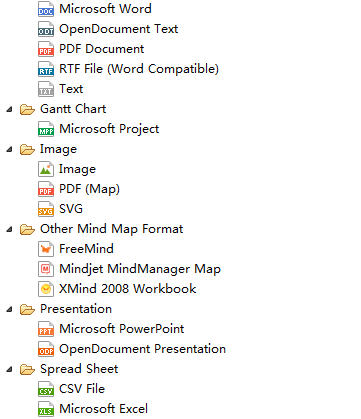
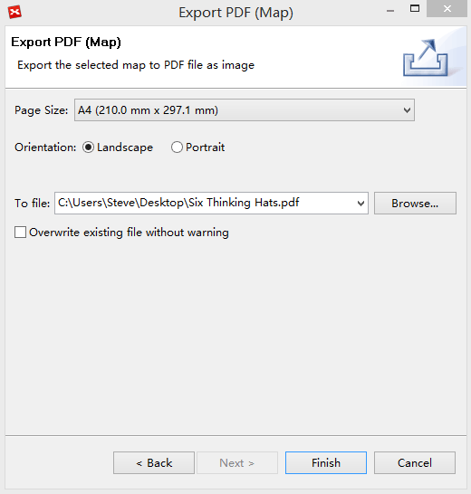
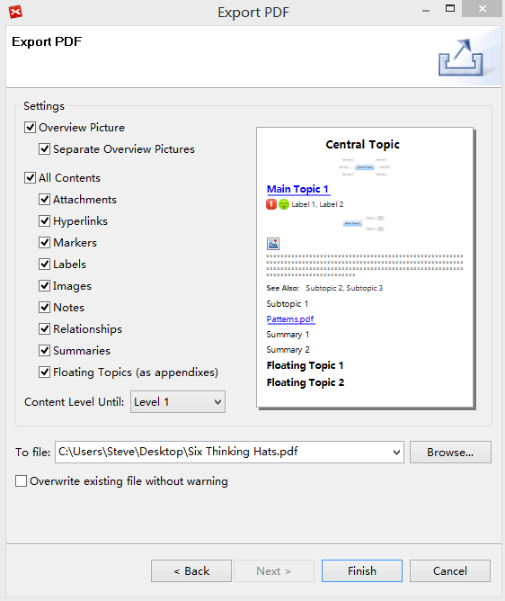
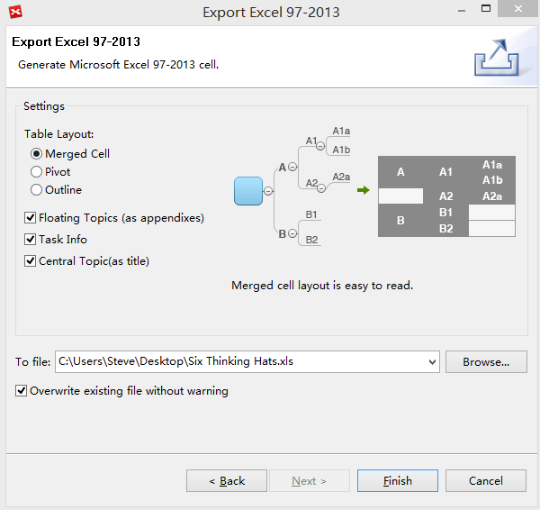
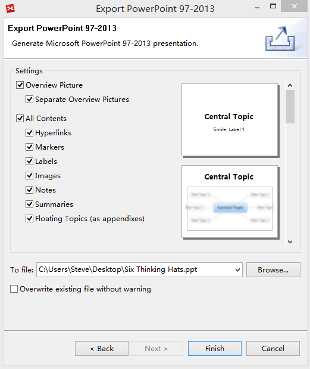

Export
XMind can push our productivity to the limits. However, the mind map file is not a universal format. For sharing, we need exporting the mind map into other formats. And XMind supports a variety of file formats, like PDF, SVG, MS Excel/Word/PPT/Project, MindManager, HTML and etc.

Export to PDF(Map):- Click "File - Export" from the menu.
- Select "PDF(Map)" in the export dialog, and click "Next" to continue.
- Choose the location and name the file after clicking 'Browser'.
- Change the settings: Page Size, Orientation.
- Click 'Finish' to end this process.

To Export to Mindjet MindManager Map:- Choose "File > Export" on the menu.
- Select "Mindjet MindManager Map" in the export dialog, and click "Next" to continue
- Choose the location and name the file after clicking "Browser".
- Click "Finish" to end this process.
- Choose "File > Export" on the menu
- Select "SVG" in the export dialog, click "Next" to continue
- choose the location and name the file after clicking "Browser".
- Click "Finish"to complete the export process.
To PDF/RTF/Microsoft Word:
- Click "File > Export" on the menu
- Select "PDF Document" in the export dialog, and click "Next" to continue.
- Choose the location and name the file after clicking 'Browser'.
- Change the settings following and check the changes in the preview dialog: 'Overview', 'Separate Overview', 'Notes', 'Floating Topics', 'Labels', 'Markers', 'Image', 'Relationships', 'Hyperlinks'.
- Click 'Finish'to complete the export process.

Export to CSV/Microsoft Excel:- Click "File - Export" from the menu.
- Select "Microsoft Excel" in the export dialog, and click "Next" to continue.
- Choose the table layout and the contents.
- Choose the location and name the file after clicking "Browser".
- Click "Finish"to complete the export process.

Export to Microsoft PowerPoint:- Click "File - Export" from the menu.
- Select "Mircosoft PowerPoint" in the export dialog, and click "Next" to continue.
- Choose the location, name the file and file format type after clicking "Browser".
- Change the settings, and see the changes in the preview dialog: "Overview", "Separate Overview", "Notes", "Floating Topics", "Labels", "Markers", "Image", "Relationships", "Hyperlinks".
- Type the "Footer text".
- Click "Finish"to complete the export process.

Expor to Microsoft Project- Click "File - Export" from the menu.
- Select "Microsoft Project" in the export dialog, and click "Next" to continue.
- Define the exported content, and set priority mappings.
- Choose the location and name the file after clicking "Browser" button.
- Click "Finish" to complete the export process.
Note:
- The preview is an example for your reference. The appearance of your map may vary from the examples presented here.
- Exporting to Microsoft Word, PowerPoint, Excel and Project is available on Windows, Mac and Linux without installed Office